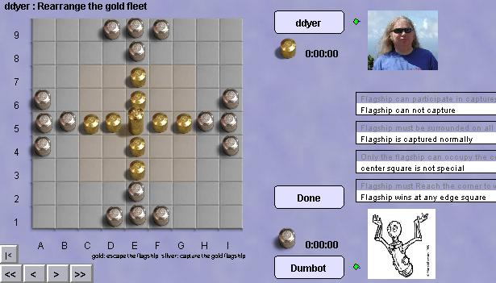

Tablut
Tablut est une variante de l'ancien jeu viking Hnefatafl. Il est intéressant
à plus d'un titre : Hnefatafl est l'un des jeux les plus anciens
dont nous connaissons les règles (avec le Go et les divers Mancala). Il
est original car les objectifs des joueurs sont dittérents et les
forces en jeu également.
La Flotte d'Or se déploie d'abord dans la zone centrale. Son
objectif est d'amener son vaisseau amiral sur un bord du plateau.
La Flotte d'Argent se déploie initialement à la périphérie. Son
objectif est de capturer le vaisseau amiral adverse.
Toutes les pièces se déplacent comme des Tours au jeu d'échecs.
Les captures s'effectuent en prenant en sandwich une pièce adverse
entre deux des siennes (prise par interception).
Robots : le robot joue bien, mais
on pourra le mettre en difficulté en choisissant un placement initial
très tordu. Soyez fairplay.
|

Le jeu
de Tablut sur Boardspace
L'interface vous permet de réarranger
la position des flottes avant la partie. Vous pouvez également
choisir entre plusieurs règles optionnelles. Or puis Argent
peuvent déplacer, supprimer ou ajouter des navires, et modifier
les règles optionnelles. Puis Or effectue son premier coup
... ou change de camp pour la Flotte d'Argent. Cette possibilité
assure l'équilibre final des forces.
|